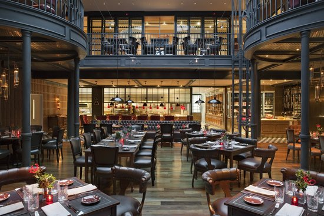
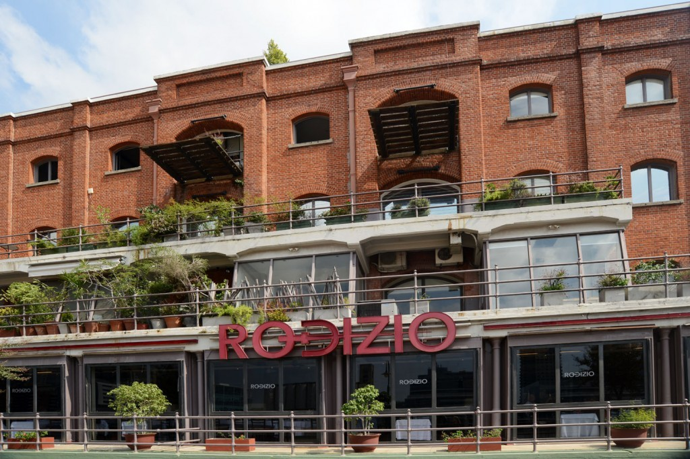
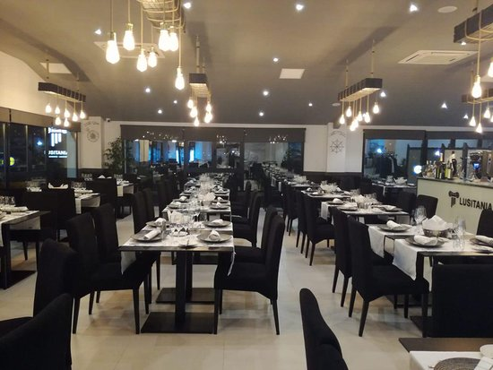
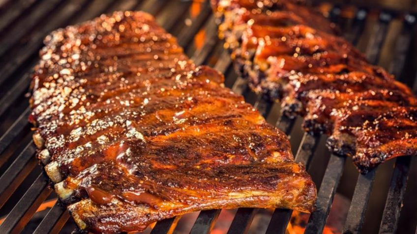
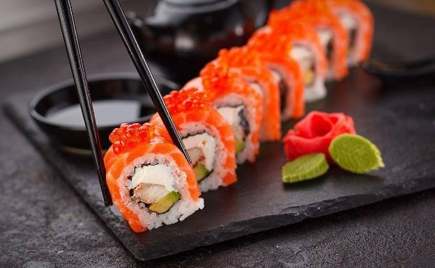
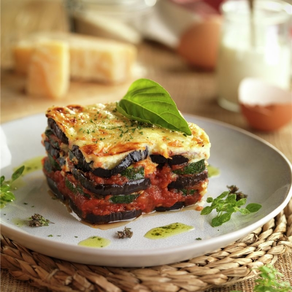

El Herbario
El Herbario, una de las ofertas gastronómicas más recomendadas en Argentina,ofrece a sus comensales una cocina auténtica mixta, que no es ajena a ligeras influencias de la gastronomía internacional. El restaurante no ofrece platos de una nacionalidad específica, o limitados a las carnes o a la sazón regional. Su carta es propuesta por el chef Rodrigo Isaza. En ella predomina el equilibrio entre los sabores nuestros, que incluyen ingredientes regionales y algo de la nostalgia que traen los sabores de la infancia, y los sabores con acentos de otras culturas...
- 
- 
- 
Nuestro restaurante ubicado en Puerto Madero ocupa la planta baja del Casal organizado en dos comedores: El comedor Do Carrasca, con cabida para treinta comensales, nos ofrece un comodo ambiente para disfrutar de un desayuno o merienda. El comedor Da Paloma está pensado para albergar una mayor cantidad de personas dedico especialmente a almuerzos o cenas, con una capacidad de hasta ochenta persona. El local, inaugurado en el verano de 2001, ofrece cocina tradicion con toques de modernidad. Nuestro restaurante se especializa primordialmente en la elaboración de pastas, catalogado como uno de los mejores de Argentina,destacandose tambien en platos de otra indole para satisfacer a quienes no les gusta nuestra especialidad.
Horarios
Lunes y Viernes: 7:30 AM - 11:30 AM.
Lunes y viernes: 12:00 PM - 17:00 PM.
Sabados y Domingos: 8:00 AM - 9:00 AM.
Domingo a lunes: 17:30 PM - 00:00 AM.
Conoce nuestra carta:

Ravioles con salsa

Ñoquis con boloñesa

Spaghetti

Costillar

Sushi

Milanesa con fritas

Mousaka de vegetales
2023
Todos los derechos reservados.